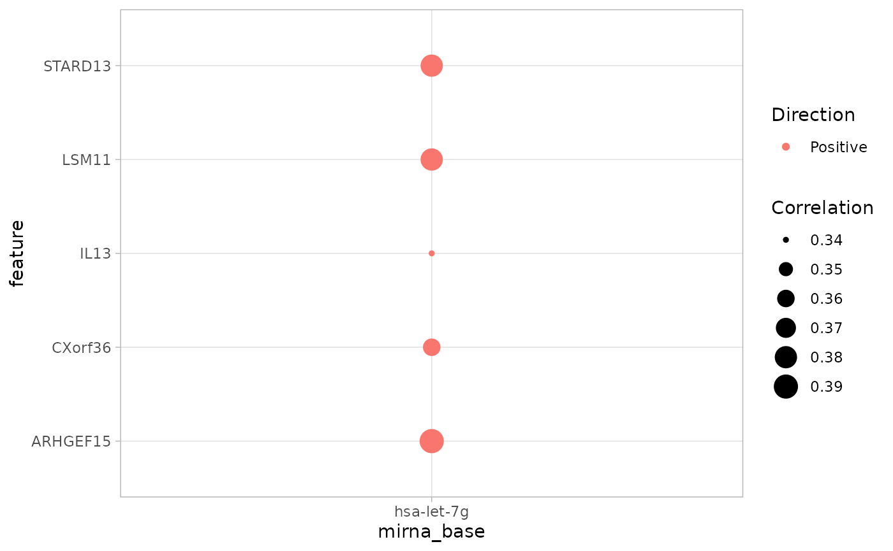

Using cRegulome
Mahmoud Ahmed
August 22, 2017
Source:vignettes/using_cRegulome.Rmd
using_cRegulome.RmdOverview
Transcription factors and microRNAs are important for regulating the gene expression in normal physiology and pathological conditions. Many bioinformatic tools were built to predict and identify transcription factors and microRNA targets and their role in development of diseases including cancers. The availability of public access high-throughput data allowed for data-driven discoveries and validations of these predictions. Here, we build on that kind of tools and integrative analyses to provide a tool to access, manage and visualize data from open source databases. cRegulome provides a programmatic access to the regulome (microRNA and transcription factor) correlations with target genes in cancer. The package obtains a local instance of Cistrome Cancer and miRCancerdb databases and provides objects and methods to interact with and visualize the correlation data.
Getting started
To get started with cRegulome, we show a very quick example. We first start by downloading a small test database file, make a simple query and convert the output to a cRegulome object to print and visualize.
# download the db file when using it for the first time
destfile = paste(tempdir(), 'cRegulome.db.gz', sep = '/')
if(!file.exists(destfile)) {
get_db(test = TRUE)
}
# connect to the db file
db_file = paste(tempdir(), 'cRegulome.db', sep = '/')
conn <- dbConnect(SQLite(), db_file)# alternative to downloading the database file
wget https://s3-eu-west-1.amazonaws.com/pfigshare-u-files/9537385/cRegulome.db.gz
gunzip cRegulome.db.gz
# enter a custom query with different arguments
dat <- get_mir(conn,
mir = 'hsa-let-7g',
study = 'STES',
min_abs_cor = .3,
max_num = 5)
# make a cmicroRNA object
ob <- cmicroRNA(dat)
# print object
ob## A cmicroRNA object: microRNA-gene correlations in Cancer
## Contains:
## 1 Cancer study/ies: STES
## 1 microRNA/s: hsa-let-7g
## 5 features: ARHGEF15 LSM11 STARD13 CXorf36 IL13
# plot object
cor_plot(ob)
Package Description
Data sources
The two main sources of data used by this package are Cistrome Cancer and miRCancerdb databases. Cistrome Cancer is based on an integrative analysis of The Cancer Genome Atlas (TCGA) and public ChIP-seq data. It provides calculated correlations of (n = 320) transcription factors and their target genes in (n = 29) cancer study. In addition, Cistrome Cancer provides the transcription factors regulatory potential to target and non-target genes. miRCancerdb uses TCGA data and TargetScan annotations to correlate known microRNAs (n = 750) and target and non-target genes in (n = 25) cancer studies.
Database file
cRegulome obtains a pre-build SQLite database file of the Cistrome Cancer and miRCancerdb databases. The details of this build is provided at cRegulomedb in addition to the scripts used to pull, format and deposit the data at an on-line repository. Briefly, the SQLite database consist of 4 tables cor_mir and cor_tf for correlation values and targets_mir and targets_tf for microRNA miRBase ID and transcription factors symbols to genes mappings. Two indices were created to facilitate the database search using the miRBase IDs and transcription factors symbols. The database file can be downloaded using the function get_db.
To show the details of the database file, the following code connects to the database and show the names of tables and fields in each of them.
# table names
tabs <- dbListTables(conn)
print(tabs)## [1] "cor_mir" "cor_tf" "targets_mir" "targets_tf"## [1] "mirna_base" "feature" "STES"
## [1] "tf" "feature" "STES"
## [1] "mirna_base" "feature"
## [1] "tf" "feature" "study"Database query
To query the database using cRegulome, we provide two main functions; get_mir and get_tf for querying microRNA and transcription factors correlations respectively. Users need to provide the proper IDs for microRNA, transcription factor symbols and/or TCGA study identifiers. microRNAs are referred to by the official miRBase IDs, transcription factors by their corresponding official gene symbols that contains them and TCGA studies with their common identifiers. In either cases, the output of calling the these functions is a tidy data frame of 4 columns; mirna_base/ tf, feature, cor and study These correspond to the miRBase IDs or transcription factors symbol, gene symbol, correlation value and the TCGA study identifier.
Here we show an example of such a query. Then, we illustrate how this query is executed on the database using basic RSQLite and dbplyr which is what the get_* functions are doing.
# query the db for two microRNAs
dat_mir <- get_mir(conn,
mir = c('hsa-let-7g', 'hsa-let-7i'),
study = 'STES')
# query the db for two transcription factors
dat_tf <- get_tf(conn,
tf = c('LEF1', 'MYB'),
study = 'STES')
# show first 6 line of each of the data.frames
head(dat_mir); head(dat_tf)## mirna_base feature cor study
## 1 hsa-let-7g ABL2 0.11 STES
## 2 hsa-let-7g ACTR10 -0.16 STES
## 3 hsa-let-7g ACVR1C -0.13 STES
## 4 hsa-let-7g ADAMTS1 0.27 STES
## 5 hsa-let-7g ADAMTS5 0.20 STES
## 6 hsa-let-7g ADCY9 0.18 STES## tf feature cor study
## 1 LEF1 A2M 0.55 STES
## 2 LEF1 A4GALT 0.40 STES
## 3 LEF1 ABCA1 0.44 STES
## 4 LEF1 ABCA6 0.54 STES
## 5 LEF1 ABCA8 0.41 STES
## 6 LEF1 ABCA9 0.48 STESObjects
Two S3 objects are provided by cRegulome to store and dispatch methods on the correlation data. cmicroRNA and cTF for microRNA and transcription factors respectively. The structure of these objects is very similar. Basically, as all S3 objects, it’s a list of 4 items; microRNA or TF for the regulome element, features for the gene hits, studies for the TCGA studies and finally corr is either a data.frame when the object has data.from a single TCGA study or a named list of data.frames when it has data from multiple studies. Each of these data.frames has the regulome element (microRNAs or transcription factors) in columns and features/genes in rows.
To construct these objects, users need to call a constructor function with the corresponding names on the data.frame output form get_*. The reverse is possible by calling the function cor_tidy on the object to get back the tidy data.frame.
## [1] "cmicroRNA"
str(ob_mir)## List of 4
## $ microRNA: chr [1:2] "hsa-let-7g" "hsa-let-7i"
## $ features: chr [1:612] "ABL2" "ACTR10" "ACVR1C" "ADAMTS1" ...
## $ studies : chr "STES"
## $ corr :List of 1
## ..$ STES:'data.frame': 612 obs. of 2 variables:
## .. ..$ hsa-let-7g: num [1:612] NA NA NA NA 0.11 NA NA NA -0.16 NA ...
## .. ..$ hsa-let-7i: num [1:612] -0.2 0.12 0.14 -0.1 0.27 -0.12 0.13 0.1 NA 0.23 ...
## - attr(*, "class")= chr "cmicroRNA"## [1] "cTF"
str(ob_tf)## List of 4
## $ TF : chr [1:2] "LEF1" "MYB"
## $ features: chr [1:1953] "A2M" "A4GALT" "ABCA1" "ABCA6" ...
## $ studies : chr "STES"
## $ corr :List of 1
## ..$ STES:'data.frame': 1953 obs. of 2 variables:
## .. ..$ LEF1: num [1:1953] 0.55 0.4 0.44 0.54 0.41 0.48 0.56 0.43 0.54 0.45 ...
## .. ..$ MYB : num [1:1953] NA NA NA NA NA NA NA NA NA NA ...
## - attr(*, "class")= chr "cTF"Methods
cRegulome provides S3 methods to interact a visualize the correlations data in the cmicroRNA and cTF objects. Table 1 provides an over view of these functions. These methods dispatch directly on the objects and could be customized and manipulated in the same way as their generics.
# cmicroRNA object methods
methods(class = 'cmicroRNA')## [1] cor_hist cor_igraph cor_joy cor_plot
## [5] cor_tidy cor_upset cor_venn_diagram print
## see '?methods' for accessing help and source code
# cTF object methods
methods(class = 'cTF')## [1] cor_hist cor_igraph cor_joy cor_plot
## [5] cor_tidy cor_upset cor_venn_diagram print
## see '?methods' for accessing help and source code## mirna_base feature cor study
## 5 hsa-let-7g ABL2 0.11 STES
## 9 hsa-let-7g ACTR10 -0.16 STES
## 11 hsa-let-7g ACVR1C -0.13 STES
## 13 hsa-let-7g ADAMTS1 0.27 STES
## 16 hsa-let-7g ADAMTS5 0.20 STES
## 17 hsa-let-7g ADCY9 0.18 STES
# cor_hist method
cor_hist(ob_mir,
breaks = 100,
main = '', xlab = 'Correlation')
dev.off()## null device
## 1
dev.off()## null device
## 1
# cor_venn_diagram method
cor_venn_diagram(ob_mir, cat.default.pos = 'text')
dev.off()## null device
## 1
# cor_upset method
cor_upset(ob_mir)
dev.off()## null device
## 1Contributions
Comments, issues and contributions are welcomed at: https://github.com/MahShaaban/cRegulome